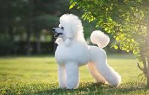

The dog is a domesticated descendant of the wolf. Also called the domestic dog, it is derived from the extinct Pleistocene wolf, and the modern wolf is the dog's nearest living relative. Dogs were the first species to be domesticated by hunter-gatherers over 15,000 years ago before the development of agriculture. Wikipedia
The German Shepherd or Alsatian is a German breed of working dog of medium to large size. The breed was developed by Max von Stephanitz using various traditional German herding dogs from 1899. It was originally bred as a herding dog, for herding sheep. Wikipedia top
The Poodle, called the Pudel in German and the Caniche in French, is a breed of water dog. The breed is divided into four varieties based on size, the Standard Poodle, Medium Poodle, Miniature Poodle and Toy Poodle, although the Medium Poodle is not universally recognised. top
 The Bulldog is a British breed of dog of mastiff type. It may also be known as the English Bulldog or British Bulldog. It is a medium sized, muscular dog of around 40–55 lb. They have large heads with a thick folds of skin around the face and shoulders, and a relatively flat face with a protruding lower jaw top
The Bulldog is a British breed of dog of mastiff type. It may also be known as the English Bulldog or British Bulldog. It is a medium sized, muscular dog of around 40–55 lb. They have large heads with a thick folds of skin around the face and shoulders, and a relatively flat face with a protruding lower jaw top